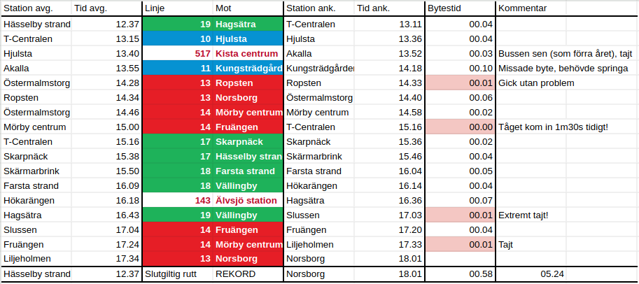
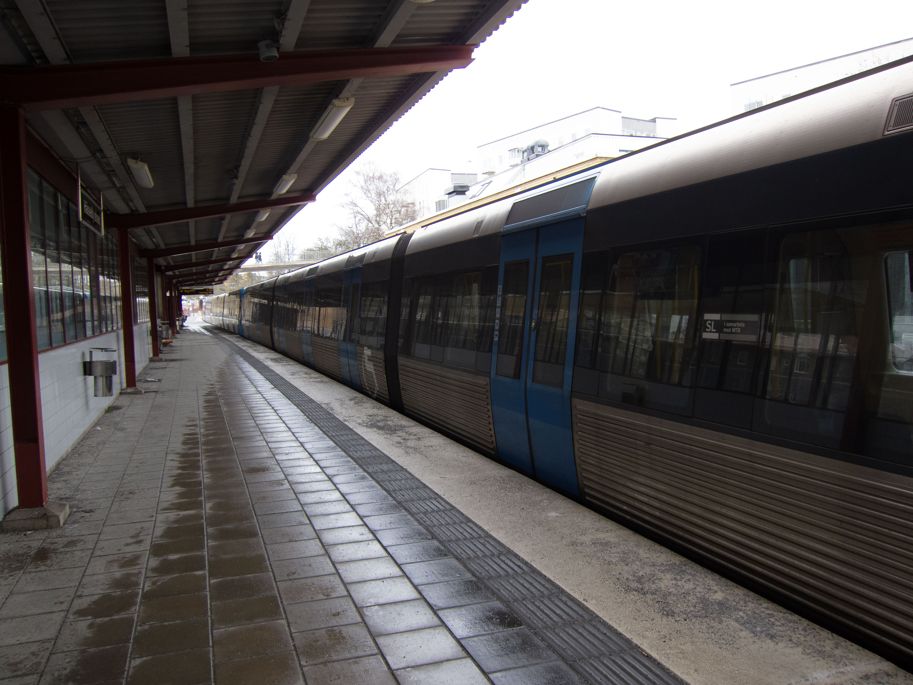
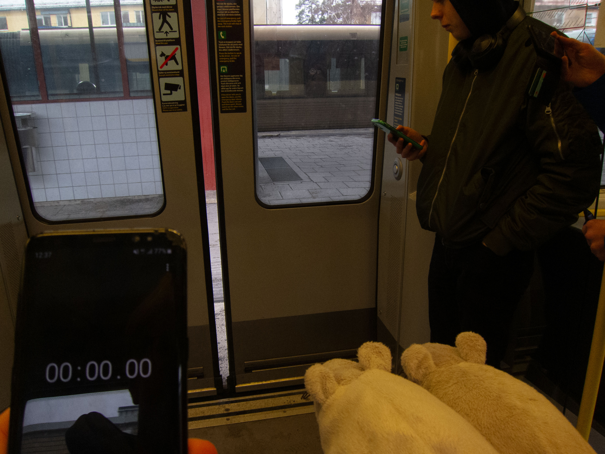
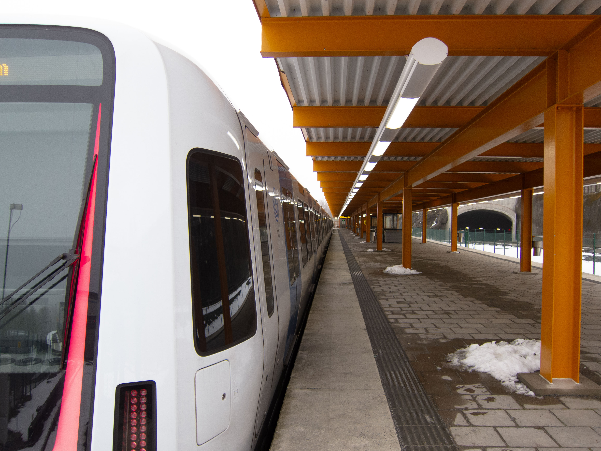

Kort om Tunnelbaneracet
Tunnelbaneracet är en grej på Youtube som går ut på att besöka alla 100 tunnelbanestationer i Stockholm på så kort tid som möjligt, d.v.s. speedrunna tunnelbanan!
Youtube-kanalen Stockholmshjärta har skapat fenomenet, medan kanalen Sam H ganska fort lyckats finna snabbare rutter och fram tills nyligen varit rekordinnehavare.
Eftersom Tunnelbaneracet är oorganiserat finns inga officiella regler, men på ett ungefär gäller följande:
Att besöka en station innebär att antingen åka förbi den med ett tunnelbanetåg (som stannar!) eller att på annat vis ta sig innanför spärrarna.
De enda tillåtna färdmedlen är ens egna fötter och SL, så man kan t.ex. inte beställa en taxi eller få skjuts mellan två ändhållplatser för att snabba på tiden.
Det är också värt att ge ett "hedersomnämnande" till det historiska Tunnelbaneracet, som var aktivt för cirka 20 år sedan.
Denna version av racet handlar inte om att vara så snabb som möjligt - utan i stället att för varje station dricka ett glas alkohol.
Av förklarliga skäl är vi inte särskilt sugna på att pröva detta, jag anser snarare att denna variant av racet bör stanna i historien.
Om någon ändå vill läsa mer om det hittade jag en webbsida tillägnad detta senast uppdaterad 2008, men jag känner att det är bäst att den får vara olänkad.
Våran resa
Jag och ett par vänner bestämde oss för att försöka oss på Tunnelbaneracet för några år sedan, med målet att slå det tidigare rekordet på 05.40.
Först gjordes ett par misslyckade försök, men till sist lyckades vi under påsklovet 2023, med en sluttid på 05.35!
Men detta rekord blev tyvärr senare slaget av YouTubekanalen Sam H - med 5 sekunder!
Vi hade redan innan vårt rekord blev slaget börjat planera för att göra ett nytt försök, för att få en ännu bättre tid, men nu var saken klar.
Ett datum sattes och många timmar spenderades på att leta den bästa rutten.
Vi var i huvudsak två som planerade rutten, men under själva försöket var vi fyra personer som åkte/sprang.
Vi var ganska säkra på vår rutt, så länge vi inte drabbades av allvarliga förseningar.
Innan försöket uppskattade jag chansen att slå rekordet till 60%.
Fredag den 5:e april 2024, under påsklovet, var det dags.
Vi började i Hässelby strand kl. 12.37 och därifrån åkte vi in till T-Centralen för att sedan byta till blå linje 10 mot Hjulsta.
Där bytte vi till buss 517 för att ta oss til Akalla, men precis som förra året var bussen sen, så bytet i Akalla på blev därför väldigt tajt.
Men till skillnad från förra året (då vi tog exakt samma buss) hann vi faktiskt med tåget denna gång!
Från Akalla åkte vi sedan hela vägen in till Kungsträdgården, för att göra klart blå linjen.
I Kungsträdgården hade vi planerat att genomföra ett enminutsbyte till ett tåg tillbaks till T-Centralen, men vi missade det bytet.
Tåget stängde sina dörrar samtidigt som vårat tåg stannade, så vi hade inte en chans.
I stället tänkte vi snabbt och kom fram till att vi precis skulle hinna springa över till Östermalmstorg för att ta ett tåg mot Ropsten.
Detta var ett tåg senare än vi tänkt ta mot norra röda linjen och tillika mot Ropsten i stället för Mörby centrum.
Men det visade sig att vi hade tur - vi kom fram till T-Centralen bara ett par minuter senare än vi annars skulle gjort!
Vi bestämde oss för att försöka oss på ett snabbt byte (mellan plattformar) till ett tåg mot Skarpnäck för att försöka få bättre bytestider på södra gröna linjen.
Annars hade vi väntat ett par minuter och tagit ett tåg mot Hagsätra i stället, som hade gett tajtare byten vid sämre ställen (men i grunden samma sluttid).
Vår tur bestod och vi kom in till T-Centalen över en minut tidigt, så bytet till det tidigare tåget gick utan minsta problem.
Resten av södra gröna linjen fortlöpte helt enligt plan, och efter mycket tåg och en buss kom vi tillbaks upp till Slussen ca en timma och tre kvart senare.
I Slussen blev det dock stressigt - vi behövde genomföra ett enminutsbyte till den andra plattformen som skulle avgöra hela rekordet.
Detta var det avgjort tajtaste (lyckade) bytet på hela försöket; vi sprang in i tåget vi bytte till samtidigt som dörrarna stängdes!
Vi åkte ner till Fruängen och sedan tillbaks upp till Liljeholmen där ännu ett enminutsbyte väntade.
Men där sprang vi ner på perrongen samtidigt som tåget kom in, så vi hade "god" marginal.
Efter detta bytet var rekordet ett faktum och vi kom till sist fram i Norsborg precis som planerat, kl. 18.01!
Sluttiden? 5 timmar, 24 minuter och 41 sekunder (avrundat uppåt till närmaste hela sekund).
Detta innebar att vi hade slagit det tidigare rekordet med över tio minuter!
Endast ett missat byte, som dessutom kunde räddas väldigt fort, i kombination med rigorös planering av möjliga alternativ - och såklart en god portion tur - gjorde att vi kunde slå rekordet.
För runt ett år sedan låg rekordet på 05.40, så gränserna för vad som verkar möjligt har flyttats fram ett rejält steg.
05.14 hägrar vid horisonten, men jag tror inte att någon lyckas klå detta rekordet innan de nya tunnelbanestationerna öppnar om något år!
Resplan, media och länkar
En Youtube-video om rekordet är på gång, men det kan dröja ett litet tag innan den kommer ut.
Tills vidare får ni hålla till godo med min Mastodon-tråd med mindre uppdateringar från färden.
Utöver detta lägger jag in ett par bilder från försöket, men de är mest illustrativa.
Om jag får klartecken från alla som var med kanske jag lägger in några fler.
Och såklart inkluderar jag också den exakta färdplanen vi följde, med kommentarer tillagda i efterhand.

Tabell över vår rutt.

Vårt tåg från Hässelby strand

Dörrarna stängs - snart är vi igång! Råttger och Laszzlo är moraliskt stöd.

Vårt tåg till Norsborg, väl framme.